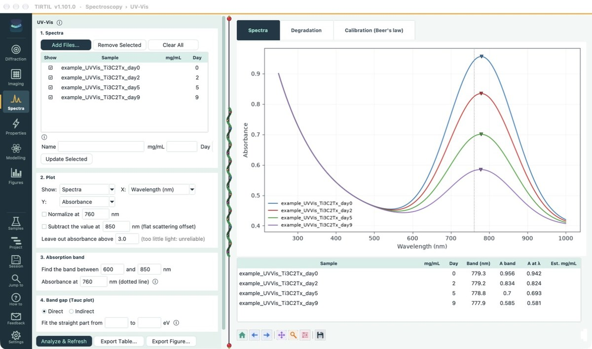
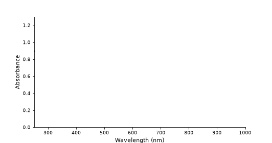

Spectra
UV-Vis
Band gaps, plasmon bands and degradation.

Steps
Add Files...Add spectra.Analyze & RefreshAnalyze: peaks, the Tauc band gap, and degradation against time.Export Table...Export the table or the figure.
How it works

Worked example
Tauc plot (αhν)² against hν: the straight part meets the axis at 3.2 eV (anatase). For Ti3C2Tx colloids, the band near 780 nm falling over days tracks oxidation.
In TIRTIL: How to (⌘/) › Try It With Example Data loads this example.